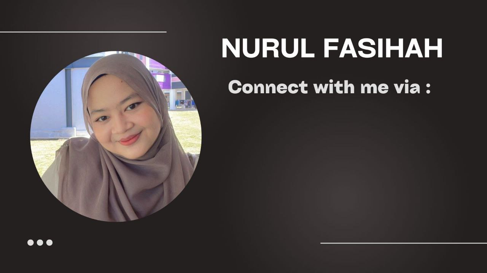

I don't like to show off my life in any online platforms as I prefer a private life. All of my accounts are private so that any strangers will never bother me around anymore.
 @INSTAGRAM @FACEBOOK @TWITTER @TIKTOK @WHATSAPP @GMAIL